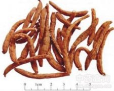

太子参

拼音
Tài Zǐ Shēn
别名
孩儿参、双批七、异叶假繁缕
来源
本品为石竹科植物孩儿参Pseudostellaria heterophylla （Miq.）Pax ex Pax et Hoffm.的干燥块根。夏季茎叶大部分枯萎时采挖，洗净，除去须根，置沸水中略烫后晒干或直接晒干。
生境分布
生于林下富腐殖质的深厚土壤中。分布华东、华中、华北、东北和西北等地。主产于江苏、山东。此外，安徽等地亦产。
药材特点
多年生草本，高15～20厘米。块根长纺锤形。茎下部紫色，近四方形，上部近圆形，绿色，有2列细毛，节略膨大。叶对生，略带内质，下部叶匙形或倒披针形。先端尖，基部渐狭，上部叶卵状披针形至长卵形，茎端的叶常4枚相集较大，成十字形排列，边缘略呈波状。花腋生，二型：闭锁花生茎下部叶腋，小形，花梗细，被柔毛；萼片4；无花瓣。普通花1～3朵顶生，白色；花梗长1～4）厘米，紫色；萼片5，披针形，背面有毛；花瓣5，倒卵形，顶端2齿裂；雄蕊10，花药紫色；雌蕊1，花柱3，柱头头状。蒴果近球形，熟时5瓣裂。种子扁圆形，有疣状突起。花期4～5月。果期5～6月。
性状
本品呈细长纺锤形或细长条形，稍弯曲，长3～10cm,直径0.2～0.6cm。表面黄白色，较光滑，微有纵皱纹，凹陷处有须根痕。顶端有茎痕。质硬而脆，断面平坦，淡黄白色，角质样；或类白色，有粉性。气微，味微甘。
性味
甘、微苦，平。
功能主治
益气健脾，生津润肺。用于脾虚体倦，食欲不振，病后虚弱，气阴不足，自汗口渴，肺燥干咳。
用法用量
9～30g。
化学成分
根含果糖、淀粉、皂甙。
药理作用
1：对机体具有适应原样作用：即能增强机体对各种有害刺激的防御能力
2：还可增强人体内的物质代谢
摘录
《中国药典》